02.27.2009 10:01
SNPWG - Standardization of Nautical Publications Working Group (SNPWG)
This week, I've been attending the
SNPWG 10 meeting in Norfolk, Virgina. I have an invited
presentation yesterday that went about an hour and 45 minutes with
excellent feedback and discusion all throughout the talk.
K. Schwehr, M. Plumlee, B. Sullivan, and C. Ware, GeoCoastPilot: Linking the Coast Pilot with Geo-referenced Imagery & Chart Information
SNPWG is a part of what used to be called CHRIS and is now Hydrographic Services and Standards Committee (HSSC) under IHO. Committies & Working Groups
The SNPWG group has a main web page and the SNPWG Wiki
K. Schwehr, M. Plumlee, B. Sullivan, and C. Ware, GeoCoastPilot: Linking the Coast Pilot with Geo-referenced Imagery & Chart Information
SNPWG is a part of what used to be called CHRIS and is now Hydrographic Services and Standards Committee (HSSC) under IHO. Committies & Working Groups
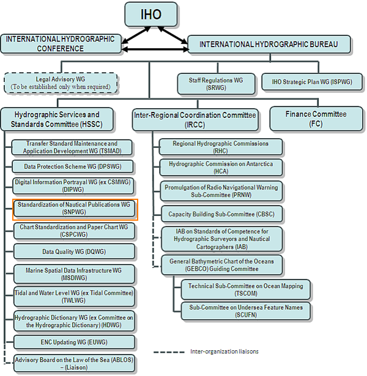
The SNPWG group has a main web page and the SNPWG Wiki
02.27.2009 07:59
NOAA Bay Hydro II up close
She is not yet finished, but we got a
tour yesterday of the NOAA Bay Hydro II.
Check out the large moon pool and sonar mount that should make swapping sonars much easier.
The wheel. They have yet to purchase an AIS transponder.
Evidence that they are still working to get everything installed.
A strange sunrise picture off the side of a building yesterday.
Check out the large moon pool and sonar mount that should make swapping sonars much easier.
The wheel. They have yet to purchase an AIS transponder.
Evidence that they are still working to get everything installed.
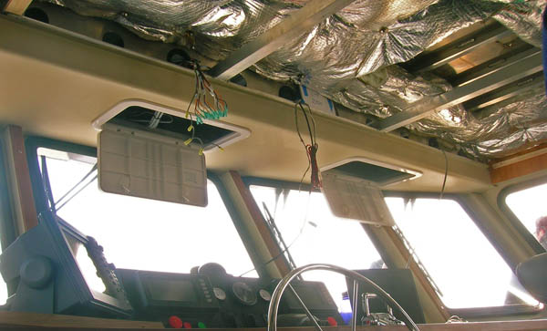
A strange sunrise picture off the side of a building yesterday.
02.27.2009 06:49
DepthX - Sonar
Back in 1999, Peter Coppin, Mike
Wagner and I created a proposal at FRC for a robot to explore down
into hot springs. We sent the proposal in to the NSF Lexan (Life in
Extreme Environments) RFP. We didn't get it, but now the Field
Robotics Center at CMU has done much more than I envisions in the
1999 proposal with the Deep Phreatic Thermal Explorer
(DEPTHX) project. Nathaniel Fairfield gave me permission to put
one of his videos up on youtube. Check out what DepthX did with a
single beam sonar!
Here is the robot from the 1999 proposal to NSF for Lexan. The model files for the concept are back online: DeepPen1-1999.tar.bz2 in VRML 1.0 format.
Our old demo site illustrated by Peter Coppin is here: Robotic Exploration and Biological Sampling of Geothermal Vents
Here is the robot from the 1999 proposal to NSF for Lexan. The model files for the concept are back online: DeepPen1-1999.tar.bz2 in VRML 1.0 format.
Our old demo site illustrated by Peter Coppin is here: Robotic Exploration and Biological Sampling of Geothermal Vents
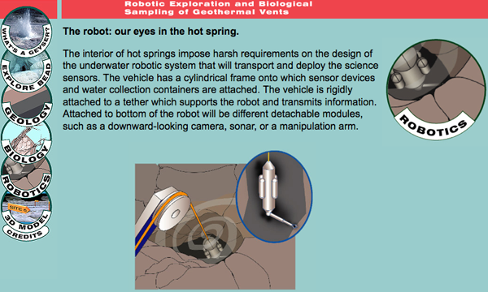
02.25.2009 19:39
NOAA AHB and Coastal Processes
Today, I visited NOAA's AHB office in
Norfolk. I saw the Bay Hydro II, but will hopefully seem more of it
tomorrow. AHB in the evening:
The Bay Hydrographer II is the 2nd from the left.
Is Photography Prohibited on an Airplane? by Thomas Hawk, under Photography is Not a Crime.
On the way down, today's puddle jumper only got to 14000 feet, so there was some good viewing of coastal processes... I was sitting aft of the engines so there is some smearing from the exhaust and reflections in the window.
The Bay Hydrographer II is the 2nd from the left.
Is Photography Prohibited on an Airplane? by Thomas Hawk, under Photography is Not a Crime.
On the way down, today's puddle jumper only got to 14000 feet, so there was some good viewing of coastal processes... I was sitting aft of the engines so there is some smearing from the exhaust and reflections in the window.
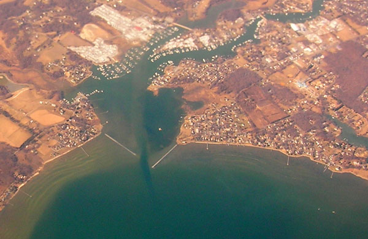
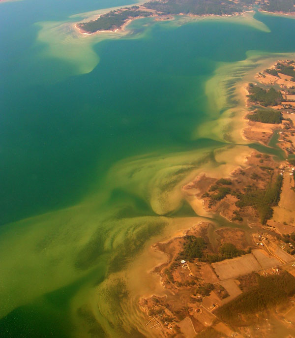
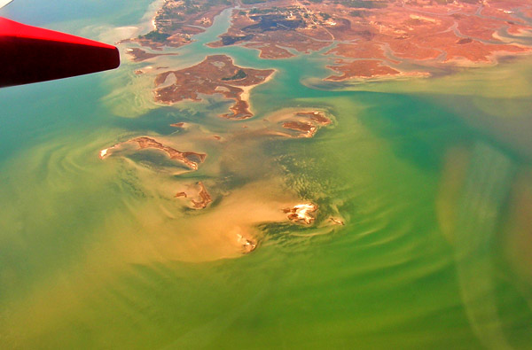
02.25.2009 11:46
Histogram/PDF of vessel draughts
I'm getting back into matplotlib for
looking at some vessel traffic. Not very exciting but is useful for
the learning matplotlib and getting a feel for this dataset.
First, I need a list of the unique vessles to inspect. I haven't decimated the shipdata to just the vessels in the study area.
First, I need a list of the unique vessles to inspect. I haven't decimated the shipdata to just the vessels in the study area.
#!/usr/bin/env python
import sqlite3
cx = sqlite3.connect('2008-10.db3')
cu = cx.cursor()
print 'vessels = ('
cu.execute('SELECT DISTINCT(userid) FROM position;')
for row in cu.fetchall():
if row[0] in (0,1,1193046):
# not useful to deal with miss configured vessels
continue
print ' \'%s\',' % row[0]
print ' )'
Now run it like this:
% ./vessel-list.py > vessels.pyNow the code to make the histogram. This is my first idea about how to make a histogram that is more fair (what fair means, I'm not yet sure). Each vessel contributes a list of draughts uniq for that vessel.
#!/usr/bin/env python
import sqlite3
from vessels import vessels
import sets
import array
import matplotlib.mlab as mlab
import matplotlib.pyplot as plt
cx = sqlite3.connect('2008-10-shipdata.db3')
cu = cx.cursor()
lengths = array.array('i')
widths = array.array('i')
draughts = array.array('f')
for vessel in vessels:
d = sets.Set()
cu.execute('SELECT draught FROM shipdata WHERE userid=?;', (vessel,))
for row in cu:
d.add(row[0])
for val in d:
draughts.append(val)
# select min(draught),max(draught) from shipdata;
# 0 to 25.5
n,bins,patches = plt.hist(draughts, 25.5, facecolor='green', alpha=0.75)
l = plt.plot(bins,linewidth=0) #,'r--',linewidth=1)
plt.grid(True)
plt.show()
And you will notice that I don't yet have units on my graph.
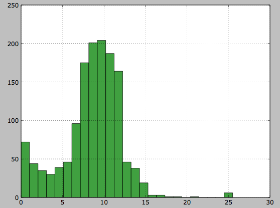
02.25.2009 08:09
Smith and Sandwell post makes slashdot
Google
Debunks Maps Atlantis Myth [slashdot] links to
Atlantis? No, it Atlant-isn't [Google Lat Long Blog].
Be warned. In talking to David Sandwell, the content of that post on the Google Lat Long Blog was modified by Google from what Smith and Sandwell wrote. There is no note to that effect in Google's post. As much as I love many of the products by Google, they need to work on being more transparent when it comes to Google Oceans. We are primarily an academic community, and as such, most of us want to work in open and clearly described processes. The more open that Google does these things, the more our community will work to support the work that Google does.
I've had to find out through all sorts of back channels that NOAA has a person co-located with Google to work on Google oceans and that the guy actually doing the bathymetry processing used to work for UNH at Jackson Estuarine Lab (JEL)!
Now if we can just figure out what is going into the data processing. NAVO implies that they did the brunt of the work. In asking around, it appears that NAVO does not create metadata or publicly release processing logs for what they do, so we may never know how they altered the data that passed through their doors. Also, in reading the NAVO press release, they make it sound like that they consider Google Oceans as their release path of bathymetry to the public. Going into Google Oceans is great, but something like NGDC submissions of the raw (level 0) data and any derived grids is the only thing that will promote real understanding of the data issues and allow for reuse of the data that they collected at great cost and effort.
Google Oceans is a giant leap forward, but we are on the bumpy road towards a smooth process for handling the world's bathymetry data. There are many people working on the problem from groups like GEBCO on down through single researchers and companies with their own survey systems. Many eyes on the data that Google Oceans provides is a great thing. Now we as a community have to follow through on making this a successful long term process.
Be warned. In talking to David Sandwell, the content of that post on the Google Lat Long Blog was modified by Google from what Smith and Sandwell wrote. There is no note to that effect in Google's post. As much as I love many of the products by Google, they need to work on being more transparent when it comes to Google Oceans. We are primarily an academic community, and as such, most of us want to work in open and clearly described processes. The more open that Google does these things, the more our community will work to support the work that Google does.
I've had to find out through all sorts of back channels that NOAA has a person co-located with Google to work on Google oceans and that the guy actually doing the bathymetry processing used to work for UNH at Jackson Estuarine Lab (JEL)!
Now if we can just figure out what is going into the data processing. NAVO implies that they did the brunt of the work. In asking around, it appears that NAVO does not create metadata or publicly release processing logs for what they do, so we may never know how they altered the data that passed through their doors. Also, in reading the NAVO press release, they make it sound like that they consider Google Oceans as their release path of bathymetry to the public. Going into Google Oceans is great, but something like NGDC submissions of the raw (level 0) data and any derived grids is the only thing that will promote real understanding of the data issues and allow for reuse of the data that they collected at great cost and effort.
Google Oceans is a giant leap forward, but we are on the bumpy road towards a smooth process for handling the world's bathymetry data. There are many people working on the problem from groups like GEBCO on down through single researchers and companies with their own survey systems. Many eyes on the data that Google Oceans provides is a great thing. Now we as a community have to follow through on making this a successful long term process.
02.24.2009 21:49
Picasa for Mac - No geospatial for Mac users
I finally got around to checking out
Picasa for Mac. The main reason I downloaded it was to check out
how well the export to Google Earth worked for geotagged
images.
Matt and I collected a whole pile of geotagged images last August in Boston Harbor. Double checking, these images do have the EXIF GPS tags.
I couldn't figure out why the Tools -> Geotag menu is all grayed out. This is all the good stuff! Try as I might, nothing changed this.
Then I discovered that as a Mac user, I'm out of luck. I just don't feel like firing up my vmware image of Windows and trying it out there. Bugger. In this image, the red emphasis is mine.
I wonder why Export to Google Earth File is not available on the Mac. It can't need anything special. Reading EXIF headers is pretty easy. Hopefully, they will get this functionality working for us Mac users. Till then, I'm sticking with iPhoto for my basic photo cataloging needs.
Matt and I collected a whole pile of geotagged images last August in Boston Harbor. Double checking, these images do have the EXIF GPS tags.
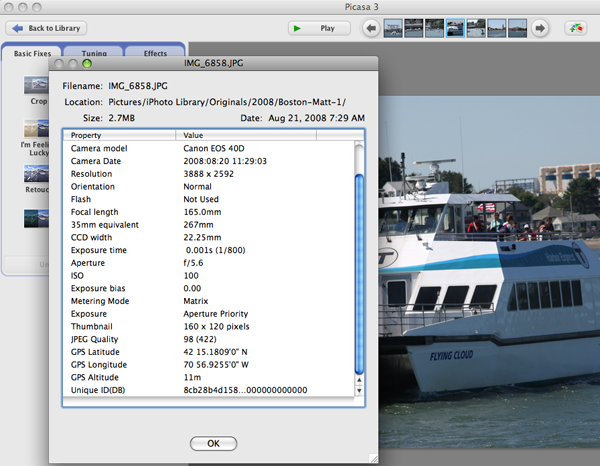
I couldn't figure out why the Tools -> Geotag menu is all grayed out. This is all the good stuff! Try as I might, nothing changed this.
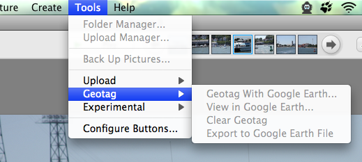
Then I discovered that as a Mac user, I'm out of luck. I just don't feel like firing up my vmware image of Windows and trying it out there. Bugger. In this image, the red emphasis is mine.
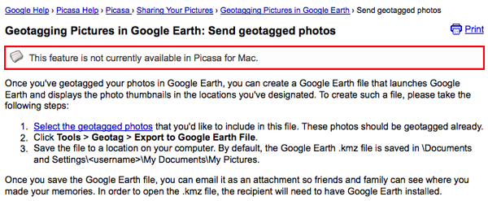
I wonder why Export to Google Earth File is not available on the Mac. It can't need anything special. Reading EXIF headers is pretty easy. Hopefully, they will get this functionality working for us Mac users. Till then, I'm sticking with iPhoto for my basic photo cataloging needs.
02.24.2009 19:47
Autonomous Rover Navigation
Check out this video from Mark Maimone's project at JPL.
The video is almost 6 years old, but it does a great job of
illustrating how autonomous rover navigation works. [original
source location: http://marsrovers.jpl.nasa.gov/gallery/video/animation.html]
The video might be helpful for those thinking about navigating underwater autonomous vehicles (AUVs). You just have to imagine morphin, dstar, and arbiter all working in 3D.
The video might be helpful for those thinking about navigating underwater autonomous vehicles (AUVs). You just have to imagine morphin, dstar, and arbiter all working in 3D.
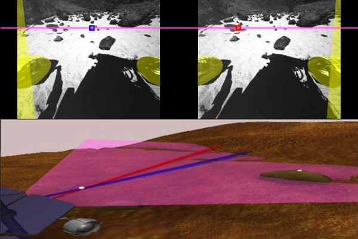
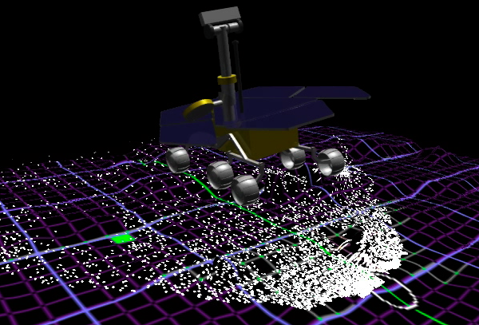
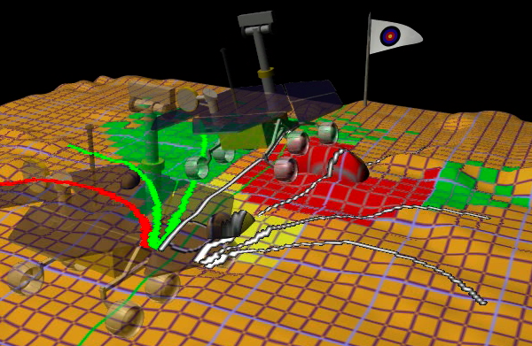
02.24.2009 10:37
sqlite mini tutorial revisited
As a reminder to myself... some SQL
basics. Start by opening a database in the sqlite program:
% sqlite3 2008-11.db3Now run some commands
-- Dumps the database table definitions .schema -- Number of points SELECT COUNT(key) FROM position; -- Create indexes for speed CREATE INDEX position_indx_userid ON position (userid); CREATE INDEX position_indx_cg_timestamp ON position (cg_timestamp); -- Number of MMSI (UserID in the tables) SELECT COUNT(DISTINCT(userid)) FROM position; -- Looking at the lowest 20 MMSI SELECT DISTINCT(userid) FROM position ORDER BY userid LIMIT 20; -- Grab 5 position reports SELECT userid,latitude,longitude,rot,sog,cog,trueheading,cg_timestamp FROM position LIMIT 5; -- 368700000|36.9631666667|-76.4201666667|-128|0.1|338|511|2008-10-31 23:59:15 -- 366880750|36.927575|-76.0675033333|-128|22.4|65.4|511|2008-10-31 23:59:15 -- 366994950|36.9258533333|-76.3386883333|-128|18.1|357.8|511|2008-10-31 23:59:18 -- 111111|36.81385|-76.2782483333|-128|0|0|511|2008-11-01 00:00:00 -- 366999608|36.912945|-76.176525|-128|0|230.5|511|2008-11-01 00:00:01Or to make a CSV:
% sqlite3 2008-11.db3 'SELECT userid,latitude,longitude,rot,sog,cog,trueheading,cg_timestamp FROM position LIMIT 5;' | tr '|' ','This gives:
368700000,36.9631666667,-76.4201666667,-128,0.1,338,511,2008-10-31 23:59:15 366880750,36.927575,-76.0675033333,-128,22.4,65.4,511,2008-10-31 23:59:15 366994950,36.9258533333,-76.3386883333,-128,18.1,357.8,511,2008-10-31 23:59:18 111111,36.81385,-76.2782483333,-128,0,0,511,2008-11-01 00:00:00 366999608,36.912945,-76.176525,-128,0,230.5,511,2008-11-01 00:00:01
02.24.2009 07:35
3D webcamera
Minoru3D has a 3D web camera that
was just featured in the MIT Technology Review: 3-D Webcam. Now it
just needs drivers for Mac and 3D modeling from stereo software, so
you can hold up objects, rotate them around, and get back a 3D
model.
02.24.2009 06:30
NAVO and Google
I just found this press release from
Feb 2nd. Again, where is the metadata for what NAVO gave to Google?
Just try this search on Google:
navoceano "google oceans" metadata
Naval Oceanography, Google Share Information on the World's Oceans
Naval Oceanography, Google Share Information on the World's Oceans
Story Number: NNS090202-16 Release Date: 2/2/2009 3:26:00 PM From Naval Meteorology and Oceanography Command STENNIS SPACE CENTER, Miss. (NNS) -- The Naval Meteorology and Oceanography Command (NMOC) entered a cooperative research agreement to share unclassified of information about the world's oceans through the new version of Google Earth launched Feb. 2. A Cooperative Research and Development Agreement (CRADA), allows Google to use certain unclassified bathymetric data sets and sea surface temperatures from the Naval Oceanographic Office (NAVOCEANO) as well as meteorological data from Fleet Numerical Meteorology and Oceanography Center (FNMOC). NAVOCEANO and FNMOC are subordinate commands of NMOC. The unclassified bathymetric data sets, sea surface temperatures and ocean current information from NAVOCEANO are incorporated in the new version of Google Earth, launched today. As part of the research and development agreement, the Navy has received Google Earth Enterprise licenses which provide for technical support that will enable the Navy to better search, view and prepare products from their extensive oceanographic data holdings. "We are excited about this project with Google because it will create greatly expanded global digital data holdings, promote understanding of the world's oceans and enhance our ability to keep the fleet safe," said Rear Adm. David Titley, commander of the Naval Meteorology and Oceanography Command. The Naval Oceanographic Office, which traces its origins to 1830, has one of the world's largest collections of ocean data. The project will build expanded global digital data holdings. The public will have access to certain publicly releasable Navy ocean data and processes via the newest version of Google Earth which enables users to dive beneath the surface of the sea and explore the world's oceans. Since 2005, Google Earth has provided access to the world's geographic information via satellite imagery, maps and Google's search capabilities. Educational content on the Google site will also enhance the public's understanding of the Navy's ocean data and its importance to the Fleet and environmental stewardship. Although the Navy has used ocean data visualization technology for about 15 years, developing, integrating, and interpreting these visualizations requires an advanced knowledge of information technology. The tools provided by Google, Inc., will give public users access to and use of visualization software technology. As part of the agreement, the Navy has received Google Earth Enterprise licenses for Google's latest software to update their geospatial information and services (GI&S) display techniques of databases and model data. This software will make visualization and manipulation of data as well as searches of NAVOCEANO's oceanographic data holdings easier for DoD users. Additionally through the CRADA, DOER will endeavor to provide data on marine conservation that the Navy can use to comply with federal regulations and recent court orders on use of sonar. This information will only be available to DoD users on secure websites.
02.23.2009 17:28
Merging multiple databases all with the same table
In processing AIS, I created a
sqlite3 database for each data of data. This is mostly because my
ais parsing code is slow. I wanted to be able to merge all those
databases into one big one. My first attempt was to run dump on
each one and combine the INSERTS.
#!/bin/sh
out=dump.sql
rm -f $out
afile=`ls -1 log*bbox.db3 | head -1`
sqlite3 $afile .dump | grep CREATE >> $out
for file in log*.db3; do
echo $file
sqlite3 $file .dump | grep -v CREATE >> $out
done
However, they primary keys get in the way. For each day, the
primary keys start over and clash with the other days. There is
probably a better way, but I wrote this python to rip out the
primary keys and write the entries to a new database.
#!/usr/bin/env python
import sqlite3,sys,os
outdbname = os.path.basename(os.getcwd())+'.db3'
outdb = sqlite3.connect(outdbname)
outcur = outdb.cursor()
# Truncated for clarity
outcur.execute('CREATE TABLE position ( key INTEGER PRIMARY KEY, MessageID INTEGER, RepeatIndicator INTEGER, UserID INTEGER, ... );')
outdb.commit()
fields = [
'MessageID',
'RepeatIndicator',
'UserID',
'NavigationStatus ',
'ROT',
'SOG',
'PositionAccuracy',
'longitude',
'latitude',
'COG',
'TrueHeading',
'TimeStamp',
'RegionalReserved',
'Spare',
'RAIM',
'state_syncstate',
'state_slottimeout',
'state_slotoffset',
'cg_r',
'cg_sec',
'cg_timestamp']
values = ','.join(['?']*len(fields))
sqlstring='INSERT INTO position (' + ','.join(fields) + ') VALUES (' + values + ');'
print sqlstring
for filename in sys.argv[1:]:
print filename
db = sqlite3.connect(filename)
cur = db.cursor()
cur.execute('SELECT * FROM position;')
for i,row in enumerate(cur):
if i%20000==0 and i != 0:
outdb.commit()
print i
outcur.execute(sqlstring,row[1:])
db.close()
outdb.commit()
Now I have one large database file for the month 2008-10.
% sqlite 2008-10.db3 'SELECT COUNT(key) FROM position;' 3194510 % sqlite 2008-10.db3 'SELECT COUNT(DISTINCT(UserID)) FROM position;' 662I've got 3.1M position reports from 662 MMSI's. It would be better to have a solution that looked at the table and dropped any keys, but that would have been more work.
02.23.2009 10:33
multibeam format magic description for file
Since I posted a request for formats
on the mbsystem mailing list, I've had 3 more submissions and added
a bunch more myself. I'm still looking for more formats. If you
have sample files and any info on decoding them, please send them
my way. I'm trying to keep the latest draft on the web here:
magic
magic
- S57 - started
- BSB - notes, but nothing useful yet
- FGDC ASCII metadata - probably works
- SEGY - not good enough
- Lidar CAF/CBF - works
- Hydrosweep - works
- SIMRAD / Kongsberg - Getting better
- XTF - started
- XSE - works
- GSF - works
- MGD77 - header works, data needs help
- MBF_HSDS2LAM - might work
- mbsystem info - works
- Caris HDCS - works, but could use more info
- Caris project summary - works
- IVS Fledermaus - works, but could be better
02.21.2009 15:24
From the archives... downtown San Diego
From the SIO Marine Facilities
(MarFac) looking across the water towards downtown. Taken September
2003.
02.21.2009 08:01
Xenia database schema for common dataloggers
Xenia by Jeremy
Cothran. Thanks go to Jeremy for sharing! See also: carolinasrcoos.org
From db_xenia_v3_sqlite.sql, here is what one of the sqlite table schema looks like. It's an interesting design trying to avoid any foreign keys having fields/tables for specific sensor data types. I couldn't find any schemas explicitly for PostgreSQL/PostGIS, so I'm assuming that they just use the sqlite schema.
I've been trying to reduce and simplify what we're doing in terms of data collection and sharing for ocean observations down to a single set of relational database tables and scripts. The name I'm choosing for this effort is 'Xenia' which is a kind of coral found in many marine aquarium coral collections which waves through the water with many palms or hands. The general issue which we run into is that data is collected to a data 'logger' in tabular format and it involves a lot of manual work to get data from these individual sensor datalogger formats into a more standardized forms which can be more easily aggregated and used. The initial goal is to develop a good general relational table schema which we can push most all of our aggregated in situ observation data into and pull various products and web services from. The secondary goal is the sharing of scripts which leverage this schema both to aggregate data and to provide output products and web services. Again the Xenia problem/product I'm trying to address is the common datalogger/filesystem which collects 10-20 obs per hour at 1 to 1000 platforms (say less than 100,000 records total/hour) and tying that back into our system of systems(CAROCOOPS, SECOORA, IOOS, GEOSS) with a common relational database driven schema infrastructure to develop products up from. ...
From db_xenia_v3_sqlite.sql, here is what one of the sqlite table schema looks like. It's an interesting design trying to avoid any foreign keys having fields/tables for specific sensor data types. I couldn't find any schemas explicitly for PostgreSQL/PostGIS, so I'm assuming that they just use the sqlite schema.
CREATE TABLE multi_obs (
row_id integer PRIMARY KEY,
row_entry_date timestamp,
row_update_date timestamp,
platform_handle varchar(100) NOT NULL,
sensor_id integer NOT NULL,
m_type_id integer NOT NULL,
m_date timestamp NOT NULL,
m_lon double precision,
m_lat double precision,
m_z double precision,
m_value double precision,
m_value_2 double precision,
m_value_3 double precision,
m_value_4 double precision,
m_value_5 double precision,
m_value_6 double precision,
m_value_7 double precision,
m_value_8 double precision,
qc_metadata_id integer,
qc_level integer,
qc_flag varchar(100),
qc_metadata_id_2 integer,
qc_level_2 integer,
qc_flag_2 varchar(100),
metadata_id integer,
d_label_theta integer,
d_top_of_hour integer,
d_report_hour timestamp
);
From their poster: sccc_poster_JCothran.ppt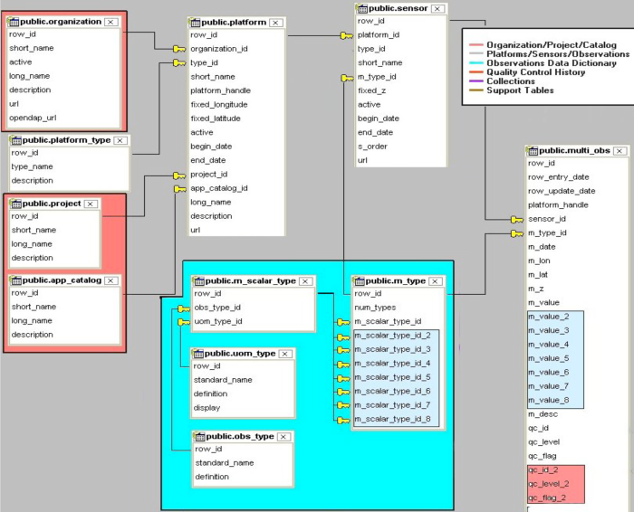
02.20.2009 13:14
USCG AIS Binary Message testbed paper
The USCG RDC testbed team has
released a conference paper:
Gonin, Johnson, Tetreault, Alexander USCG Development, Test and Evaluation of AIS Binary Messages for Enhanced VTS Operations, Institute of Navigation, International Technical Meeting
From the conclusion: In summary this paper has provided a basic introduction to AIS and VTS, introduced the idea of using AIS transmit for improved safety and efficiency in VTS areas, highlighted the results of the USCG Requirements Study, discussed the work of the RTCM SC121 WG, and described the Tampa Bay Test Bed. The goals of the effort are to: * Identify and prioritize the types of information that should be broadcast using AIS binary messages - information that is available, important to the mariner, and provided to the mariner in a timely fashion and in a usable format * Develop recommendations of standards for transmission of binary data * Provide input on shipboard display standards. * Obtain data to support reduced voice and improved navigation.
Gonin, Johnson, Tetreault, Alexander USCG Development, Test and Evaluation of AIS Binary Messages for Enhanced VTS Operations, Institute of Navigation, International Technical Meeting
From the conclusion: In summary this paper has provided a basic introduction to AIS and VTS, introduced the idea of using AIS transmit for improved safety and efficiency in VTS areas, highlighted the results of the USCG Requirements Study, discussed the work of the RTCM SC121 WG, and described the Tampa Bay Test Bed. The goals of the effort are to: * Identify and prioritize the types of information that should be broadcast using AIS binary messages - information that is available, important to the mariner, and provided to the mariner in a timely fashion and in a usable format * Develop recommendations of standards for transmission of binary data * Provide input on shipboard display standards. * Obtain data to support reduced voice and improved navigation.
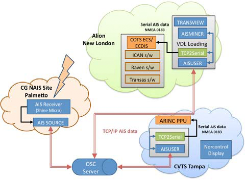
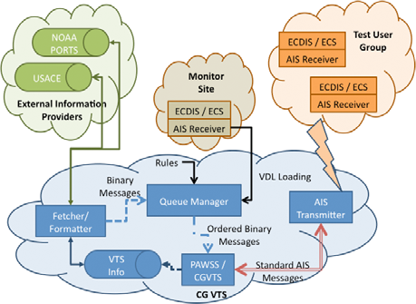
02.20.2009 08:10
Atlantis "found" in google oceans
Update 2008-Feb-24:
Atlantis? No, it Atlant-isn't. [Google Lat Long Blog] - Posted
by Walter Smith and David Sandwell. This is a great start. Now this
just needs to be a link from inside the Google Oceans content in
Google Earth.
Media Stupidity Watch: No, it's not Atlantis [ogle earth]
This really is what happens when you don't explain your data. Since Google picked up the data, I really think it is Google's responsibility to put in a link in Google Earth that explains what the ocean bathymetry is all about. I can think of several marine scientists who would happily write a draft of an explanation with Google at no charge to Google.
Yes, we need better reporting, but we also need to provide more information about how these things are constructed that are linked right into the application. It's a horribly movie, but in Star Ship Troopers, the "news articles" have a link for "Want to know more?"
I've seen experts get turned around by all sorts of artifacts in data... I'm including myself here. Most artifacts are obvious, but there are many that are confusing.
(Putting on my flame retardant suit here...)
Also, in talking to google, it is unclear exactly how the final data product is produced. Dave Sandwell's DTS/SIO is in there, but I've been told by others that Google couldn't deal with DTS/SIO tagged data very well and NAVOCEANO QC'd it, cleaned it up and merged "some higher resolution data" in a few areas. And where is the metadata on what processing was done so we can figure out what really is in there?
Google Ocean: Has Atlantis been found off Africa?
Update 2009-02-21: Hopes of finding 'lost city' dashed [The Press Association] quiting a "spokeswoman"... Google, how about a tutorial for the public:
Grid in Atlantic Ocean - Google Earth Community
Trackback 2008-Feb-23: Links: Google Earth for infighting, 4D Utrecht, Geology KML, anyone? [Ogle Earth]
Media Stupidity Watch: No, it's not Atlantis [ogle earth]
This really is what happens when you don't explain your data. Since Google picked up the data, I really think it is Google's responsibility to put in a link in Google Earth that explains what the ocean bathymetry is all about. I can think of several marine scientists who would happily write a draft of an explanation with Google at no charge to Google.
Yes, we need better reporting, but we also need to provide more information about how these things are constructed that are linked right into the application. It's a horribly movie, but in Star Ship Troopers, the "news articles" have a link for "Want to know more?"
I've seen experts get turned around by all sorts of artifacts in data... I'm including myself here. Most artifacts are obvious, but there are many that are confusing.
(Putting on my flame retardant suit here...)
Also, in talking to google, it is unclear exactly how the final data product is produced. Dave Sandwell's DTS/SIO is in there, but I've been told by others that Google couldn't deal with DTS/SIO tagged data very well and NAVOCEANO QC'd it, cleaned it up and merged "some higher resolution data" in a few areas. And where is the metadata on what processing was done so we can figure out what really is in there?
Google Ocean: Has Atlantis been found off Africa?
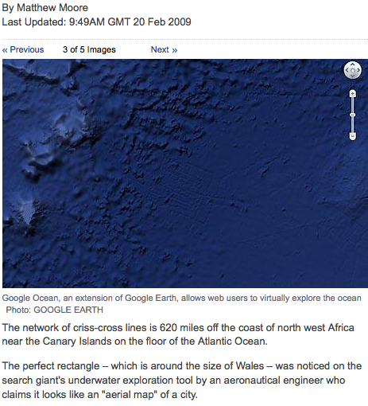
Update 2009-02-21: Hopes of finding 'lost city' dashed [The Press Association] quiting a "spokeswoman"... Google, how about a tutorial for the public:
... "In this case, however, what users are seeing is an artefact of the data collection process.["] "Bathymetric (or sea floor terrain) data is often collected from boats using sonar to take measurements of the sea floor.["] "The lines reflect the path of the boat as it gathers the data." ...I added the missing " characters. And via an Ogle Earth comment, you can see that people on the Keyhole BBS site have found the cruise. The Geology of the Madeira Abyssal Plain: Further studies relevant to its suitablility for radioactive waste disposal by Searle et al, 1987.
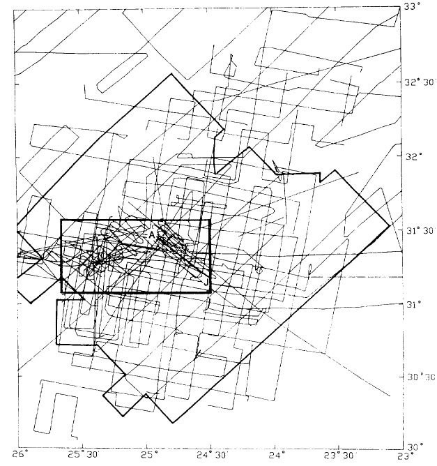
Grid in Atlantic Ocean - Google Earth Community
Trackback 2008-Feb-23: Links: Google Earth for infighting, 4D Utrecht, Geology KML, anyone? [Ogle Earth]
02.19.2009 17:33
Windows installers and remote desktop
I don't use windows that often, so
today I had to call in the big guns from upstairs (aka Will) to get
this figured out when I couldn't solve it. First, I have commercial
software that uses a license dongle. It didn't work when I tried to
start up the program giving me this message about NetHASP License
Manager not working.
First, I tried to restart the license handling process. Start - Control Panel - Administrative Tools - Services. I looked for Flex LM, Hasp, NetHASP, but there was nothing there. I remove the software and tried reinstalling, but kept getting this error:
We tried cleaning out the windows temp directory, removing the partial application install and the data directory, but no luck after several reboot cycles.
Then will had me try is not over remote desktop (actually rdesktop). I have two nice big LCD's on my desktop, so was doing everything remotely. Switching to the laptop's keyboard and display, the setup program ran normally and I now have working software.
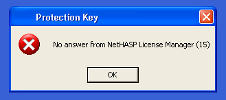
First, I tried to restart the license handling process. Start - Control Panel - Administrative Tools - Services. I looked for Flex LM, Hasp, NetHASP, but there was nothing there. I remove the software and tried reinstalling, but kept getting this error:
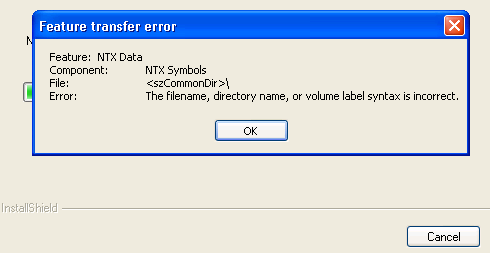
We tried cleaning out the windows temp directory, removing the partial application install and the data directory, but no luck after several reboot cycles.
Then will had me try is not over remote desktop (actually rdesktop). I have two nice big LCD's on my desktop, so was doing everything remotely. Switching to the laptop's keyboard and display, the setup program ran normally and I now have working software.
02.19.2009 14:34
Korean ice breaker - Araon
The Korea Polar Research
Institute (KORDI) has some info on their new ice breaker that
should be in trials later this year.
A general request to people who build/buy research ships: please release/publish the 3D models of your vessels. This lets the visualization teams make some great products that will show off research that happens with the vessels down the road.
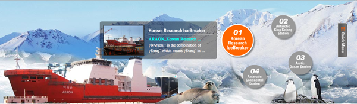
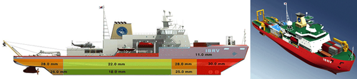
A general request to people who build/buy research ships: please release/publish the 3D models of your vessels. This lets the visualization teams make some great products that will show off research that happens with the vessels down the road.
02.18.2009 10:11
MarineGrid project in Ireland
Kenirons et al., The MarineGrid
project in Ireland with Webcom, in Computers & Geosciences.
The 1999-2007 Irish National Seabed Survey is one of the largest ocean floor mapping projects ever attempted. Its aim is to map the ocean floor of the Irish territorial waters (approximately View the MathML source). To date, the Geological Survey of Ireland has gathered in excess of 4 TB of multibeam sonar data from the Irish National Seabed, and this data set is expected to exceed 10 TB upon completion. The main challenge that arises from having so much data is how to extract accurate information given the size of the data set. Geological interpretation is carried out by visual inspection of bathymetric patterns. The size of this, and similar, data sets renders the extraction of knowledge by human observers infeasible. Consequently, the focus has turned to using artificial intelligence and computational methods for assistance. The commercial and environmental sensitivity of the data means that secure data processing and transmission are of paramount importance. This has lead to the creation of the MarineGrid project within the Grid-Ireland organisation. New methods have been developed for statistical analysis of bathymetric information specifically for automated geological interpretation of rock types on the sea floor and feature extraction from the sea floor. We present a discussion on how to provide Marine and Geological researchers convenient yet secure access to resources that make use of grid technologies including pre-written algorithms in order to exploit the Irish National Seabed Survey data archive.I should really figure out how much data we have for the US Law of the Sea mapping.
02.17.2009 21:46
February
Ice crystals growing on the plants on
the side of the mill building.
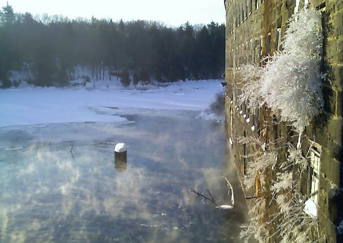
02.17.2009 07:05
Apple Care
Update 3 hours later: I have my
laptop and it has a new LCD display (no more scratches!), new
optical superdrive (hmm... worked for me, but I'll take it), new
logic board, new display cable, and (not listed on the parts)
replaced missing rubber feet under the laptop.
We are not near an Apple store, so Apple sent me a next day mailer and off my laptop went for repairs. The tech on the phone had me boot off of a Leopard DVD and the screen came back. However it was still flicking at boot, so they are going to replace part of the LCD screen. Can't wait to have it back. I've been using a G4 as my primary machine and I miss the speed of the dual core 2.4 GHz intel.
While not as nice as just stopping by an Apple Store, the web experience has been good. Too bad we don't get onsite coverage as we do with some of our other vendors.
We are not near an Apple store, so Apple sent me a next day mailer and off my laptop went for repairs. The tech on the phone had me boot off of a Leopard DVD and the screen came back. However it was still flicking at boot, so they are going to replace part of the LCD screen. Can't wait to have it back. I've been using a G4 as my primary machine and I miss the speed of the dual core 2.4 GHz intel.
While not as nice as just stopping by an Apple Store, the web experience has been good. Too bad we don't get onsite coverage as we do with some of our other vendors.
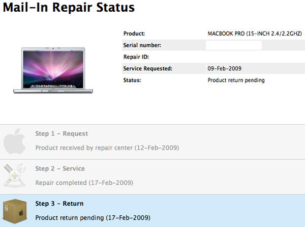
02.16.2009 21:49
US Congressional Report on the UN Law of the Sea
RL32185 U.N. Convention on
the Law of the Sea: Living Resources Provisions [Open
Congressional Reports]
... This report describes provisions of the LOS Convention relating to living marine resources and discusses how these provisions comport with current U.S. marine policy. As presently understood and interpreted, these provisions generally appear to reflect current U.S. policy with respect to living marine resource management, conservation, and exploitation. Based on these interpretations, they are generally not seen as imposing significant new U.S. obligations, commitments, or encumbrances, while providing several new privileges, primarily related to participation in commissions developing international ocean policy. No new domestic legislation appears to be required to implement the living resources provisions of the LOS Convention. This report will be updated as circumstances warrant.
02.16.2009 17:27
rlwrap for javascript and MacTubes
Two seemingly unrelated software
packages:
I bumped it to version 0.30 in my local fink setup... I just got rlwrap setup with coloring of the prompt by adding "-p '0;33' js" Also I've got history between sessions working by adding "-a Password:". Well worth creating an alias for this in my bashrc.
MacTubes let me quickly download a mp4 of my Google Tech Talk. MacTubes is super simple.
And Monica found a mac svn GUI called svnX.
I bumped it to version 0.30 in my local fink setup... I just got rlwrap setup with coloring of the prompt by adding "-p '0;33' js" Also I've got history between sessions working by adding "-a Password:". Well worth creating an alias for this in my bashrc.
% emacs `mdfind rlwrap.info | grep unstable` % fink install spidermonkey % rlwrap -r -a Password: -p '0;33' js % less ~/.js_history
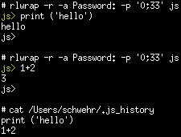
MacTubes let me quickly download a mp4 of my Google Tech Talk. MacTubes is super simple.
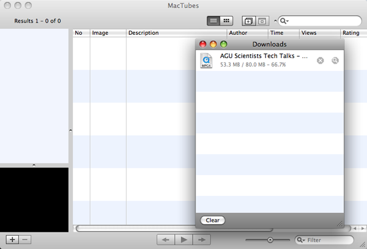
And Monica found a mac svn GUI called svnX.
02.16.2009 13:59
ISO 19115 metadata
While the ISO 19115 spec is essential
closed because I don't feel like paying for it, I did discover that
there is opensource software that the FGDC
claims writes ISO 19115: GeoNetwork. It's Java based,
so I'll have a harder time seeing what it is doing, but the source
code is hopefully available here: GeoNetwork on
sourceforge --> GeoNetwork
svn source
I tried the display it in Google Earth. The legend came up, but no actual data.
% svn co https://geonetwork.svn.sourceforge.net/svnroot/geonetworkI downloaded the universal installer to my Mac. Once installed, it was a little cranky. I'm testing it on an old G4 laptop. Their startup instructions hide what is going on a bit, so I was a bit more explicit.
% cd /Applications/geonetwork/jetty % java -Xms48m -Xmx512m -DSTOP.PORT=8079 -Djava.awt.headless=true -jar start.jar ../bin/jetty.xmlThen I wanted to see what ports it was really opening up. I had something else using port 8080 that I had to kill first. lsof is good for networking too. Try this:
% lsof -i -nP # Like netstatThe metadata tab is pretty, but where I can I export or get ISO19115 metadata?
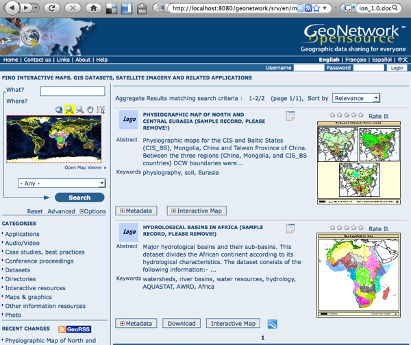
I tried the display it in Google Earth. The legend came up, but no actual data.
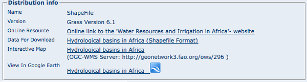
02.16.2009 11:31
AIS US final ruling
Amendment of the
Commission's Rules Regarding Maritime Automatic Identification
Systems - 47 CFR Parts 2, 80, and 90 [html] or FCC-08-208A1.pdf
15 CFR Part 922 - Channel Islands National Marine Sanctuary Regulations; Final Rule pdf
Maritime Communications AGENCY: Federal Communications Commission. ACTION: Final rule. SUMMARY: In this document, the Federal Communications Commission (Commission or FCC) adopts additional measures for domestic implementation of Automatic Identification Systems (AIS), an advanced marine vessel tracking and navigation technology that can significantly enhance our Nation's homeland security as well as maritime safety. Specifically, in the Second Report and Order in WT Docket No. 04-344, the Commission designates maritime VHF Channel 87B (161.975 MHz) for exclusive AIS use throughout the Nation, while providing a replacement channel for those geographic licensees that are currently authorized to use Channel 87B in an inland VHF Public Coast (VPC) service area (VPCSA); determines that only Federal Government (Federal) entities should have authority to operate AIS base stations, obviating any present need for the Commission to adopt licensing, operational, or equipment certification rules for such stations; and requires that Class B AIS shipborne devices--which have somewhat reduced functionality vis-[agrave]-vis the Class A devices that are carried by vessels required by law to carry AIS equipment, and are intended primarily for voluntary carriage by recreational and other non- compulsory vessels--comply with the international standard for such equipment, while also mandating additional safeguards to better ensure the accuracy of AIS data transmitted from Class B devices. These measures will facilitate the establishment of an efficient and effective domestic AIS network, and will optimize the navigational and homeland security benefits that AIS offers. DATES: Effective March 2, 2009 except for Sec. 80.231, which contains new information collection requirements, that have not been approved by OMB. The Federal Communications Commission will publish a document in the Federal Register announcing the effective date. The incorporation by reference listed in the rule is approved by the Director of the Federal Register as of March 2, 2009. ...I also found this in a related ruling this year. I am wondering why NOAA didn't just get another N-AIS receiver site installed in the area such that the data is consistant across all of southern California. There is no mention of N-AIS.
15 CFR Part 922 - Channel Islands National Marine Sanctuary Regulations; Final Rule pdf
...
279. Comment: DMP Strategy CS.2--Comprehensive Data Management must
include data on commercial shipping dynamics via the Automated
Identification System, and CINMS staff must consider taking a
leadership role in bringing this system online.
Response: CINMS staff have taken a lead role in working with the
Navy, U.S. Coast Guard, and The Marine Exchange of Southern California
to install an AIS transceiver station on Santa Cruz Island or Anacapa
Island and integrate the data with an AIS transceiver station on San
Nicolas Island. Once completed, NOAA will work with partners to
facilitate the distribution and management of incoming AIS data. For
more information about CINMS AIS activities see FMP Strategy CS.8
(Automated Identification System (AIS) Vessel Tracking).
...
02.15.2009 16:37
fink ipython update
Andrea Riciputi has retired as a fink
maintainer. Thanks go to him for the time he was able to give to
fink. He was the maintainer for the ipython package. I've taken it
over an done some updates. Fink now has version 0.9.1 and I've
added a python 2.6 variant. Python 2.5 is still the best supported
version and the -pylab command line option does not work for 2.6
(we are still waiting on pygtk2-gtk-py for python 2.6 that doesn't
crash before we can have a python 2.6 matplotlib package (working
for me is not enough).
Please give it a try and let me know if you have any troubles. I have added an InfoTest section to the package, but the tests have trouble with python 2.6 and also write into which ever account is running the tests... not good. I've submitted a but report to ipython's launchpad tracker: Mac OSX Fink Python 2.6 test failure
I don't use much of ipython's capabilities, but I can't live without the parts I do use.
I still need to add a DescUsage to the package. If anyone wants to send me some text for that section, I would greatly appreciate it.
Please give it a try and let me know if you have any troubles. I have added an InfoTest section to the package, but the tests have trouble with python 2.6 and also write into which ever account is running the tests... not good. I've submitted a but report to ipython's launchpad tracker: Mac OSX Fink Python 2.6 test failure
I don't use much of ipython's capabilities, but I can't live without the parts I do use.
I still need to add a DescUsage to the package. If anyone wants to send me some text for that section, I would greatly appreciate it.
02.14.2009 19:23
Help with automated mail sorting
I've posted this on live journal if
anyone wants to put suggestions in the comments.
How do I sort older mail into folders on the mail server? [livejournal]
I suffer from an overly large email inbox and trying to move older emails with Thunderbird to yearly folders with imap regularly corrupts my mail folder. I'd like to run a cron job that takes email older than some time from $MAIL and puts it in ~/mail/NNNN where NNNN is the year of the email. I have to keep my email readable via imap so I can work across computers. Any suggestions?
The mail server is a Cent OS 4.7 box with dovecot, postfix, procmail, mailutil, alpine, python 2.3.4, and perl. I am not an admin on the machine.
Procmail looks like it will handle mail as it comes in, but I'd like to keep my inbox as a real inbox.
I really want something that can run on the server as a cron job without talking to imap.
Any ideas would be a huge help!
Thanks!
How do I sort older mail into folders on the mail server? [livejournal]
I suffer from an overly large email inbox and trying to move older emails with Thunderbird to yearly folders with imap regularly corrupts my mail folder. I'd like to run a cron job that takes email older than some time from $MAIL and puts it in ~/mail/NNNN where NNNN is the year of the email. I have to keep my email readable via imap so I can work across computers. Any suggestions?
The mail server is a Cent OS 4.7 box with dovecot, postfix, procmail, mailutil, alpine, python 2.3.4, and perl. I am not an admin on the machine.
Procmail looks like it will handle mail as it comes in, but I'd like to keep my inbox as a real inbox.
I really want something that can run on the server as a cron job without talking to imap.
Any ideas would be a huge help!
Thanks!
02.14.2009 13:57
Matplotlib video seminar by John Hunter
Ben Smith pointed me to this very
good lecture about matplotlib. I've used matplotlib off and on over
the last 4 years or so, but haven't really gotten into it... but
clearly I should. It far outpaces what gnuplot can do. I just wish
the basemap portion would switch to libgeos3 and that everything
would play well with python 2.6.
Matplotlib by John D. Hunter at NIPS ´08 Workshop: Machine Learning Open Source Software. There look to be a lot over very good talks in the MLOSS conference videos.
John Hunter mentions matplotlib use on phoenix. His image shows a figure from the Nav team who I don't know very well.
He also shows VTK visualizations
Matplotlib by John D. Hunter at NIPS ´08 Workshop: Machine Learning Open Source Software. There look to be a lot over very good talks in the MLOSS conference videos.
John Hunter mentions matplotlib use on phoenix. His image shows a figure from the Nav team who I don't know very well.
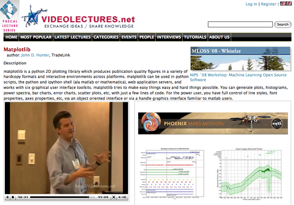
He also shows VTK visualizations
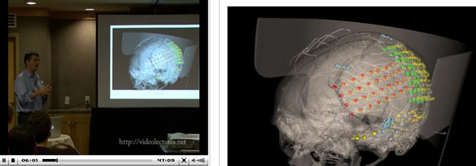
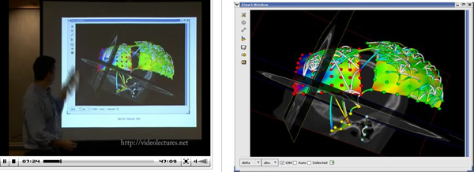
02.14.2009 07:19
Using unix file command to detect multibeam sonar and segy seismic data
This has been on my wish list for a
while. The unix file command is a fast way to get at what
the contents of a file are. It knows a great many formats, but has
not known about many scientific data formats. I've looked at it
before and got turned around. But, yesterday, it clicked. I don't
know why I was having trouble before with the format. It really
isn't too difficult. I started by reading the "magic" format
description that describes how to identify file types.
Here is my first batch of codes:
One of the big issues here is finding stable targets in files. With many of these formats, they are a stream of packets. We have to be able to check for all of the different packet types coming first.
% man magicFrom that, it looks like some file formats may be nearly impossible to get right, but I should at least be able to do some. One thing to remember is that this does not count on any file naming conventions. As we seem time after time, people and computers can generate really strange names that have nothing to do with the contents.
Here is my first batch of codes:
#Magic 0 byte 67 SEGY seismic, ASCII >3500 beshort 0x0 revision 0 >3500 beshort 0x1 revision 1 0 byte 195 SEGY seismic, EBCDIC >3500 beshort 0x0000 revision 0 >3500 beshort 0x0001 revision 1 # Atlas Hydrosweep starts with any of these packets # MB-System code of mb21 0 string ERGNPARA Hydrosweep multibeam sonar 0 string ERGNMESS Hydrosweep multibeam sonar 0 string ERGNSLZT Hydrosweep multibeam sonar 0 string ERGNAMPL Hydrosweep multibeam sonar 0 string ERGNEICH Hydrosweep multibeam sonar 0 string ERGNHYDI Hydrosweep multibeam sonar 0 string MEABCOMM Hydrosweep multibeam sonar 0 string MEABHYDI Hydrosweep multibeam sonar 0 string MEABPDAT Hydrosweep multibeam sonar # Seabeam 2100 # mbsystem code mb41 0 string SB2100DR SeaBeam 2100 DR multibeam sonar 0 string SB2100PR SeaBeam 2100 PR # EM3002 # mb58 # 0479 .all 0 belong 0xdc020000 EM 3002 multibeam sonar # EM120 # mb51 0 belong 0x000001aa EM 120 multibeam sonar # MGD77 - http://www.ngdc.noaa.gov/mgg/dat/geodas/docs/mgd77.htm # mb161 9 string MGD77 MGD77 Header, Marine Geophysical Data Exchange Format 0 regex 5[A-Z0-9][A-Z0-9\ ][A-Z0-9\ ][A-Z0-9\ ][A-Z0-9\ ][A-Z0-9\ ][A-Z0-9\ ][A-Z0-9\ ][+-][0-9] MGD77 Data, Marine Geophysical Data Exchange FormatI am pretty sure that my EM 3002 and EM 120 are only partly right. I just opened two files and looked at the first 4 bytes. It would be better to read the spec and find something stable, but it gets the idea across. Also, several of these specifications are weak and likely to tag files that are not of that type. It's a start.
% file -m ../magic * 0479_20080620_175447_RVCS.all: EM 3002 multibeam sonar Atlantic_line_172_raw.mb51: EM 120 multibeam sonar GOA_line_5.sgy: SEGY seismic, EBCDIC revision 0 Marianas_Line_013.sgy: SEGY seismic, EBCDIC revision 0 TN136HS.306: Hydrosweep multibeam sonar ba66005.a77: MGD77 Data, Marine Geophysical Data Exchange Format ba66005.h77: MGD77 Header, Marine Geophysical Data Exchange Format hs.d214.mb21: Hydrosweep multibeam sonar lj101.sgy: SEGY seismic, ASCII revision 0 sb199704060133.mb41: SeaBeam 2100 DR multibeam sonar sb199708160538.rec: SeaBeam 2100 PRHopefully we can build this up as a community and eventually get at least some of it into the file distribution.
One of the big issues here is finding stable targets in files. With many of these formats, they are a stream of packets. We have to be able to check for all of the different packet types coming first.
02.13.2009 17:18
simplesegy 0.7 released
I just released simplesegy version
0.7. segy-metadata can now set the year and day for segy files that
didn't record such information. It should get upset on files that
cross over days, but I haven't tried that yet. WARNING: I picked a
random year and Julian day for the testing here.
I really have no way of validating the FGDC metadata format here. The USGS validator seems to make assumptions that aren't true for multibeam data.
FGDC Metadata Tools
I do see a XML schema here: fgdc-std-001-1998.xsd/view
If you are in the know, how abot contributing to wikipedia? Wikipedia on Geospatial metadata... I wish these standards like ISO 19115:2003 were available for free like the basic internet standards.
% segy-metadata -v --year=2004 --julian=134 -t /sw/share/doc/simplesegy-py26/docs/blank.metadata.tmpl Marianas_Line_013.sgy
file: Marianas_Line_013.sgy -> Marianas_Line_013.sgy.metadata.txt
Computing forced time range assuming hour, min, sec are valid
datetime_min: 2004-05-13 05:47:54
datetime_max: 2004-05-13 05:59:37
x_min: 142.439746389
x_max: 142.453371389
y_min: 20.4817763889
y_max: 20.5070630556
Excerpts from the FGDC metadata template:
Identification_Information:
Citation:
Citation_Information:
Originator:
Publication_Date:
Title: Line Marianas_Line_013.sgy
Time_Period_of_Content:
Time_Period_Information:
Range_of_Dates/Times:
Beginning_Date: 2004-05-13
Beginning_Time: 05:47
Ending_Date: 2004-05-13
Ending_Time: 05:59
...
Spatial_Domain:
Bounding_Coordinates:
West_Bounding_Coordinate: 142.439746389
East_Bounding_Coordinate: 142.453371389
South_Bounding_Coordinate: 20.4817763889
North_Bounding_Coordinate: 20.5070630556
...
Standard_Order_Process:
Digital_Form:
Digital_Transfer_Information:
Format_Name: binary
Format_Information_Content:
Transfer_Size: 1.0184 MB
Now if someone could generate a good template for the XML metadata
schema that would work for SEG-Y seismic data, we would be all
set.I really have no way of validating the FGDC metadata format here. The USGS validator seems to make assumptions that aren't true for multibeam data.
FGDC Metadata Tools
I do see a XML schema here: fgdc-std-001-1998.xsd/view
If you are in the know, how abot contributing to wikipedia? Wikipedia on Geospatial metadata... I wish these standards like ISO 19115:2003 were available for free like the basic internet standards.
02.13.2009 14:16
Testing SEGY data
I keep running into "SEG-Y" files
that don't match what I think a SEG-Y file should be. Rather than
struggle through the error messages that my code gives when it hits
something strange, I created a script in simplesegy called
segy-validate. This script doesn't check all that much yet, but so
far it range checks about 80% of the binary header and the first
trace header. This catches most of the things that have burned me
so far. I am sure I could spend days coming up with checks, but it
is a start. I hope this will be helpful to people when they are
inspecting new data streams.
A couple examples...
First ODEC Bathy 2000:
A couple examples...
First ODEC Bathy 2000:
% segy-validate -v -B -T 320 Bathy2000/y0902-01.dat | egrep 'ERRORS|WARNING|FAIL|^\[' [validating file] Invalid trace trailer present ... WARNING (Present) Byte order ... WARNING (Backwards) vertical_sum ... FAIL (0) amp_recov_meth in (1,2,3,4) ... FAIL (0) impulse_polarity in (1,2) ... FAIL (0) [trace] vert_sum_no ... FAIL horz_stacked_no ... FAIL data_use in (1,2) ... FAIL (0) scaler_elev_depth in +/- (1,10,100,100,1000) ... FAIL (0) scaler_coord in +/- (1,10,100,100,1000) ... FAIL (0) coord_units in (1,2,3,4) ... FAIL (0) ERRORS: 9Knudsen where the year and day are not getting set:
% segy-validate -v Marianas_Line_013.sgy| egrep 'ERRORS|WARNING|FAIL|^\[' [validating file] vertical_sum ... FAIL (0) correlated_traces in (1,2) ... FAIL (0) amp_recov_meth in (1,2,3,4) ... FAIL (0) impulse_polarity in (1,2) ... FAIL (0) [trace] data_use in (1,2) ... FAIL (0) correlated in (1,2) ... FAIL (0) year ... FAIL (0) time_basis in (1,2,3,4) ... FAIL (0) ERRORS: 8Knudsen where things worked better. This time without the grep to show all the things that appear correct.
% segy-validate -v GOA_line_5.sgy [validating file] filename = GOA_line_5.sgy Invalid trace trailer present ... ok Byte order ... ok Text header starts with a C ... ok job_id positive ... ok line_no positive ... ok traces_per_ensemble positive ... ok aux_traces_per_ensemble positive ... ok sample_interval positive ... ok orig_sample_interval positive ... ok samples_per_trace greater than 0 ... ok orig_samples_per_trace positive positive ... ok sample_format in 1,2,3,4,5, or 8 ... ok ensemble_fold positive ... ok trace_sorting in [-1 ... 9] ... ok vertical_sum ... FAIL (0) sweep_start positive ... ok sweep_end greater than or equal to start ... ok sweep_len positive ... ok sweep_type in segy bin header in [0 ... 4] ... ok trace_sweep_channel positive ... ok sweep_taper_len_start positive ... ok sweep_taper_len_end positive ... ok taper_type is valid ... ok correlated_traces in (1,2) ... FAIL (0) bin_gain_recovered ... ok amp_recov_meth in (1,2,3,4) ... FAIL (0) measurement_system ... ok impulse_polarity in (1,2) ... FAIL (0) vib_polarity in [0...8] ... ok seg_y_rev ... ok fixed_len_trace_flag ... ok num_extended_text_headers ... ok [trace] line_seq_no ... ok file_seq_no ... ok field_rec_no ... ok trace_no ... ok esrc_pt_no ... ok ensemble_no ... ok trace_no_ensemble ... ok trace_id ... ok vert_sum_no ... ok horz_stacked_no ... ok data_use in (1,2) ... FAIL (0) water_depth_src ... ok water_depth_grp ... ok scaler_elev_depth in +/- (1,10,100,100,1000) ... ok scaler_coord in +/- (1,10,100,100,1000) ... ok coord_units in (1,2,3,4) ... ok wx_vel ... ok sub_wx_vel ... ok uphole_t_src ... ok uphole_t_grp ... ok mute_start ... ok mute_end ... ok trace_samples ... ok sample_interval ... ok gain_type ... ok gain_type optional used ... ok correlated in (1,2) ... FAIL (0) sweep_freq_start ... ok sweep_freq_end greater than start ... ok sweep_len ... ok sweep_type in trace ... ok sweep_taper_len_start ... ok sweep_taper_len_end ... ok taper_type ... ok alias_filt_freq ... ok notch_filt_freq ... ok low_cut_freq ... ok high_cut_freq ... ok year ... ok day ... ok hour ... ok min ... ok sec ... ok time_basis in (1,2,3,4) ... ok trace_weight ... ok ERRORS: 6
02.13.2009 09:04
Bob Ballard on the Colbert Report
Article provided by the Art Trembanis news
wire...
Which ocean mapper will be next on the Colbert Nation?
Bob immitates a lobster...
Which ocean mapper will be next on the Colbert Nation?
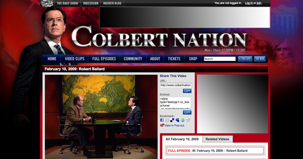
Bob immitates a lobster...
02.13.2009 08:06
Hiding data behind registrations and shopping carts
Trackback: Making
data more citable... Sean Gillies links to Bryan Lawrence,
CoolURIs, and Hypertext Style: Cool URIs
don't change. Looking at my blog, the URI's don't change, but I
decidedly do NOT have cool URI's. Month aggregate files are
painful.
A rambling opinion piece about data release policies and credit...
I appreciate the people who release their data to the public, but when that data is hidden behind web apps that require logins and shopping carts, that hidding hinders all sorts of good things that the community can do.
First, it prevents web crawlers from indexing the data. If google or some similar entity wanted to scrape all the data and build a master index of segy, multibeam, S57 chart, or other data on the web, blocked data will not be seen.
Second, it makes it a pain for me to get the data. When I find a file to look at, I have to spend extra minutes or so to get the data. Usually, after a few minutes, I discover that the data wasn't what I really need or any number of reasons that the provider didn't think of. And when I do get the data, I can't put the URL into my notes to get the data again if need be or pass it to a college or add it to a citation. And I can't use wget or curl to pull the data.
And filenames that I that have little meaning to me. For example:
I always try to lead by example when I can (however, it's often not my data to give out): TTN136B. The data folder has Hydrosweep Multibeam, ADCP, and other data streams. The web services provide more functionality that I can't, but my data is directly accessible.
If it's credit that these groups are trying trying to get, we need a new strategy for crediting data use. If I can somehow reference data in my publications is a way that is machine readable, then people could go to some central source and list all the users of data. I've often used data but it is some part that has no relevant publication that I can cite.
I feel strongly that scientists should get some sort of official credit for releasing data and for when it gets used by others. If we have an easy to use (and no cost - aka not DOI's), then we as a community can start to convince those that review our careers for promotions and such to look at that metric. And the solution must span across publishing methods. It has to work for all the NSF, NOAA, and other databases, but more importantly, it should also work for data that is placed on a local webserver when there is no appropriate database to submit to.
I think that combining credit with the ability to specify something like WKT locations in figures will change how science is done and search in very positive ways. Now if we could just require valid file formats and public definition of file formats from sensor providers.
A rambling opinion piece about data release policies and credit...
I appreciate the people who release their data to the public, but when that data is hidden behind web apps that require logins and shopping carts, that hidding hinders all sorts of good things that the community can do.
First, it prevents web crawlers from indexing the data. If google or some similar entity wanted to scrape all the data and build a master index of segy, multibeam, S57 chart, or other data on the web, blocked data will not be seen.
Second, it makes it a pain for me to get the data. When I find a file to look at, I have to spend extra minutes or so to get the data. Usually, after a few minutes, I discover that the data wasn't what I really need or any number of reasons that the provider didn't think of. And when I do get the data, I can't put the URL into my notes to get the data again if need be or pass it to a college or add it to a citation. And I can't use wget or curl to pull the data.
And filenames that I that have little meaning to me. For example:
0c1eff36a664f94c01bafd0d1fcdfa45.tar.gzHere is an example of a web data service. It has a lot of great features. Especially helpful are the preview images. But I have to add images and data to a cart.
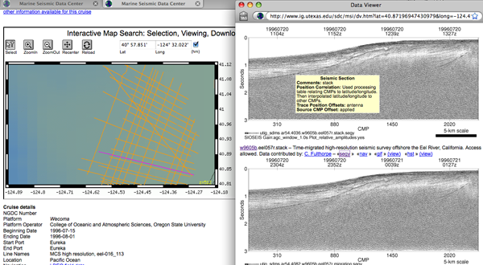
I always try to lead by example when I can (however, it's often not my data to give out): TTN136B. The data folder has Hydrosweep Multibeam, ADCP, and other data streams. The web services provide more functionality that I can't, but my data is directly accessible.
If it's credit that these groups are trying trying to get, we need a new strategy for crediting data use. If I can somehow reference data in my publications is a way that is machine readable, then people could go to some central source and list all the users of data. I've often used data but it is some part that has no relevant publication that I can cite.
I feel strongly that scientists should get some sort of official credit for releasing data and for when it gets used by others. If we have an easy to use (and no cost - aka not DOI's), then we as a community can start to convince those that review our careers for promotions and such to look at that metric. And the solution must span across publishing methods. It has to work for all the NSF, NOAA, and other databases, but more importantly, it should also work for data that is placed on a local webserver when there is no appropriate database to submit to.
I think that combining credit with the ability to specify something like WKT locations in figures will change how science is done and search in very positive ways. Now if we could just require valid file formats and public definition of file formats from sensor providers.
02.12.2009 21:39
More segy issues
There always seems to be yet another
wrinkle in SEGY data. For some reason a Knudsen decided not to
write the year or day fields. It has a time factor of 0. Thanks.
From the segy rev 1 doc:
I think Sonarweb took user input to get the date figured out. Neither lsd nor my code understand the dates.
Time basis code:
1 = Local
2 = GMT (Greenwich Mean Time)
3 = Other, should be explained in a user defined stanza in the Extended
textual File Header
4 = UTC (Coordinated Universal Time)
Nope, 0 is just not in there. Also, what is the difference between
GMT and UTC. Isn't it under a second?I think Sonarweb took user input to get the date figured out. Neither lsd nor my code understand the dates.
% lsd Marianas_Line_013.sgy | head -4
SHOT TR RP TR ID RANGE DELAY NSAMPS SI YR DAY HR MIN SEC
46045 1 0 0 1 0 0 1600 415 0 0 5 47 54
46046 1 0 0 1 0 0 1600 415 0 0 5 47 57
46047 1 0 0 1 0 0 1600 415 0 0 5 47 59
46048 1 0 0 1 0 0 1600 415 0 0 5 48 1
And my code (cut down for space...)
% segy-info Marianas_Line_013.sgy -v -t -b -a -F year -F day -F hour -F min -F sec -F time_basis -F x -F y
[text header]
C 1 CLIENT COMPANY CREW NO
C 2 LINE AREA MAP ID
C 3 REEL NO DAY-START OF REEL YEAR OBSERVER
C 4 INSTRUMENT: MFG KEL MODEL POSTSURVEY SERIAL NO
C 5 DATA TRACES/RECORD AUXILIARY TRACES/RECORD CDP FOLD
C 6 SAMPLE INTERVAL SAMPLES/TRACE 1600 BITS/IN BYTES/SAMPLE 2
C 7 RECORDING FORMAT FORMAT THIS REEL MEASUREMENT SYSTEM
...
C39
C40 END EBCDIC
[bin header]
seg_y_rev = 0
line_no = 1
sweep_len = 0
...
orig_samples_per_trace = 0
sample_format = 3
samples_per_trace = 1600
aux_traces_per_ensemble = 0
...
[traces]
# trace: year, day, hour, min, sec, time_basis, x, y
0: 0, 0, 5, 47, 54, 0, 142.439746389, 20.4817763889
1: 0, 0, 5, 47, 57, 0, 142.439781389, 20.4818613889
2: 0, 0, 5, 47, 59, 0, 142.439824722, 20.4819780556
...
292: 0, 0, 5, 59, 35, 0, 142.453339722, 20.5070116667
293: 0, 0, 5, 59, 37, 0, 142.453371389, 20.5070630556
294: 0, 0, 5, 59, 37, 0, 142.453371389, 20.5070630556
Do I really want to give an option that forces the year and
day?02.12.2009 14:32
Customizing the Mac Finder
Jim G. just showed me two trick in
the Mac finder that really make it easier to use. In the orange
circles is the Show Path Bar that puts the path at the
bottom. When working through a lot of files, I often get turned
around. This is a great help. In the red circle is the icon that
lets you change the width of any column. Good for long file names.
Maybe these were obvious to many people, but I'd never tried
them.
This second image shows editing the Toolbar. There are a couple other good tools such as the Get Info and Path buttons at are nice to have.
I also started using Ctrl-Apple-5 to sort the icons on my desktop when it gets messy.
Now if I could only shift the left hand column to have Places at the top, Then Devices, and finally Shared at the bottom!
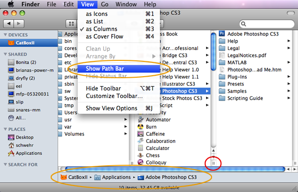
This second image shows editing the Toolbar. There are a couple other good tools such as the Get Info and Path buttons at are nice to have.
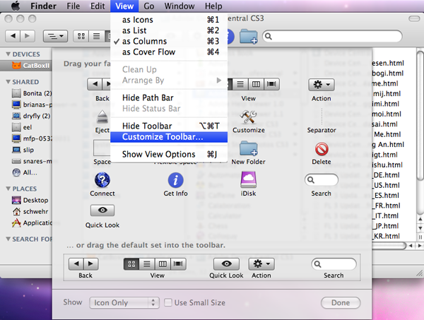
I also started using Ctrl-Apple-5 to sort the icons on my desktop when it gets messy.
Now if I could only shift the left hand column to have Places at the top, Then Devices, and finally Shared at the bottom!
02.11.2009 16:36
spacecraft collision
U.S.
Satellite Destroyed in Space Collision
Two satellites, the Iridium 33 (US commercial) and the Russian Cosmos 2251 collided over the South Pole, resulting in total destruction of both spacecraft and 260 new pieces of space junk. The good news is that it appear to be of no risk to ISS or STS. However, the collision took place just 100 KM above the EOS polar track and may become a debris risk to all EOS polar orbiter satellites.
02.11.2009 16:28
Handling ODEC Bath 2000 subbottom data
Based on what I've seen, I would
recommend avoiding Bath2000 systems. Or is there some way to
configure the system to write proper segy?
I've been spending some time with ODEC Bathy 2000 seismic data. Thanks to Paul Henkart for helping me understand the ODEC format. ODEC .dat files are SEG-Y like files. They use coordinate units 3, but set the field to 0. The x and y are IEEE float numbers. All byte orders are backwards. Each trace has a trailer of 320 bytes. I don't have info on what is in those bytes. There appears to be some other sort of data between traces in some ODEC files. Both simplesegy and sioseis do not read past whatever it is. Sonarweb does read the file.
If anyone cares, I have sample file that works for sonarweb but not the others: y0902-01.dat.bz2
The command that I used to read odec as follows. The -T 320 and -B
Here is the conversion from .dat ODEC to segy with sioseis:
I've been spending some time with ODEC Bathy 2000 seismic data. Thanks to Paul Henkart for helping me understand the ODEC format. ODEC .dat files are SEG-Y like files. They use coordinate units 3, but set the field to 0. The x and y are IEEE float numbers. All byte orders are backwards. Each trace has a trailer of 320 bytes. I don't have info on what is in those bytes. There appears to be some other sort of data between traces in some ODEC files. Both simplesegy and sioseis do not read past whatever it is. Sonarweb does read the file.
If anyone cares, I have sample file that works for sonarweb but not the others: y0902-01.dat.bz2
The command that I used to read odec as follows. The -T 320 and -B
% segy-info -s -T 320 -B Bathy2000/y0902-01.dat -f kml > y0902-01.dat.kmlHere is what I got with simplesegy and sioseis converted segy.
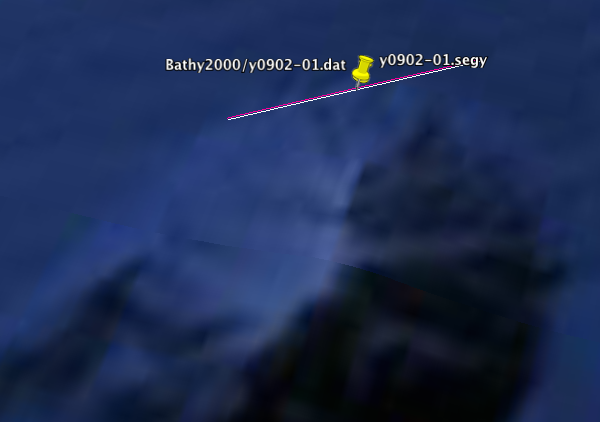
Here is the conversion from .dat ODEC to segy with sioseis:
!/usr/bin/env bash
sioseis <<EOF
procs diskin header diskoa end
diskin
ipath y0902-01.dat format odec end
end
header
i45 = 3 end
end
prout
indices l3 l4 l19 l20 l21 l22
format (6(1x,F15.0))
fno 0 lno 10
end
end
diskoa
opath y0902-01.segy end
end
end
EOF
And looking at the data:
% lsd y0902-01.segy 1 20 1 | grep xy Source and receiver xy coordinates: -65.52282 39.458923 0. 0. Source and receiver xy coordinates: -65.52223 39.4592 0. 0. Source and receiver xy coordinates: -65.52164 39.45948 0. 0. Source and receiver xy coordinates: -65.52104 39.45975 0. 0. Source and receiver xy coordinates: -65.520454 39.460026 0. 0. Source and receiver xy coordinates: -65.51987 39.460297 0. 0. Source and receiver xy coordinates: -65.519264 39.460567 0. 0. Source and receiver xy coordinates: -65.518684 39.460842 0. 0. Source and receiver xy coordinates: -65.5181 39.461117 0. 0. Source and receiver xy coordinates: -65.5175 39.461384 0. 0. Source and receiver xy coordinates: -65.51691 39.461647 0. 0. Source and receiver xy coordinates: -65.51632 39.46192 0. 0. Source and receiver xy coordinates: -65.51573 39.462196 0. 0. Source and receiver xy coordinates: -65.515144 39.462467 0. 0. Source and receiver xy coordinates: -65.51456 39.46274 0. 0. Source and receiver xy coordinates: -65.51397 39.463013 0. 0. Source and receiver xy coordinates: -65.51338 39.463287 0. 0. Source and receiver xy coordinates: -65.51279 39.46356 0. 0. Source and receiver xy coordinates: -65.51221 39.46384 0. 0. Source and receiver xy coordinates: -65.51161 39.464108 0. 0.sioseis, dutil and lsd can be had on the sioseis binaries page
02.11.2009 07:19
Microsoft Virtual Earth - CommandBridge
The virtualearth4gov blog just
posted:
Microsoft Virtual Earth Augmenting Port Security:
CommandBridge. Here is doom and gloom video:
<a href=
"http://video.msn.com/?mkt=en-US&playlist=videoByUuids:uuids:e5380774-78bd-4515-99cc-32a89af58ee8&showPlaylist=true&from=msnvideo"
target="_new" title=
"CommandBridge Collaborative Situational Awareness">Video:
CommandBridge Collaborative Situational
Awareness</a>
There aren't any really good images of the screen in the video to give a sense what the operator is doing. It looks like many of the other systems out there from what I can see in the video. e.g. offerings from PortVision, GateHouse, ICAN-Marine, etc. The major difference appears to be that it is based on Microscoft's Virtual Earth.
As a side note to the USCG IT Staff... why do you block youtube? There is a lot of important content that your employees are missing out on. At least this video shouldn't be blocked for Coast Guard folks.
There aren't any really good images of the screen in the video to give a sense what the operator is doing. It looks like many of the other systems out there from what I can see in the video. e.g. offerings from PortVision, GateHouse, ICAN-Marine, etc. The major difference appears to be that it is based on Microscoft's Virtual Earth.
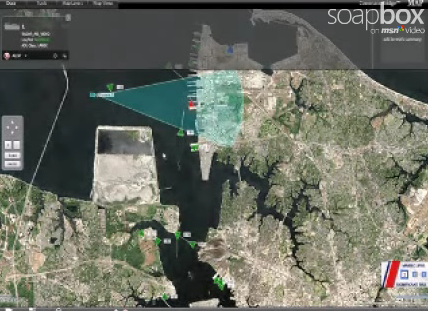
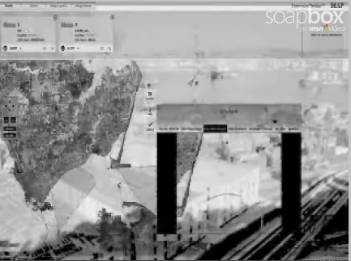
As a side note to the USCG IT Staff... why do you block youtube? There is a lot of important content that your employees are missing out on. At least this video shouldn't be blocked for Coast Guard folks.
02.11.2009 06:52
scipy 0.7.0 released - python 2.6
Looks like we still have many
challenges left on the Python 2.6 front. From the scipy
0.7.0 release notes:
Last week, I created a wxpython-py26 that seems to work, but I am not a big user, so I don't know if it truely works.
... A significant amount of work has gone into making SciPy compatible with Python 2.6; however, there are still some issues in this regard. The main issue with 2.6 support is NumPy. On UNIX (including Mac OS ), NumPy 1.2.1 mostly works, with a few caveats. On Windows, there are problems related to the compilation process. The upcoming NumPy 1.3 release will fix these problems. Any remaining issues with 2.6 support for SciPy 0.7 will be addressed in a bug-fix release. Python 3.0 is not supported at all; it requires NumPy to be ported to Python 3.0. This requires immense effort, since a lot of C code has to be ported. The transition to 3.0 is still under consideration; currently, we don't have any timeline or roadmap for this transition. ...Also, I'm waiting on pygtk2-gtk-py for which dmacks is seeing core dumps with python 2.6. It works for me with matplotlib, but that doesn't prove that it is stable.
Last week, I created a wxpython-py26 that seems to work, but I am not a big user, so I don't know if it truely works.
02.10.2009 09:39
Photos of Rays
Check out this article and especially
the photos! Thanks to Eric De Jong for pointing me to this.
The great ocean migration... thousands of majestic stingrays swim to new seas
The great ocean migration... thousands of majestic stingrays swim to new seas
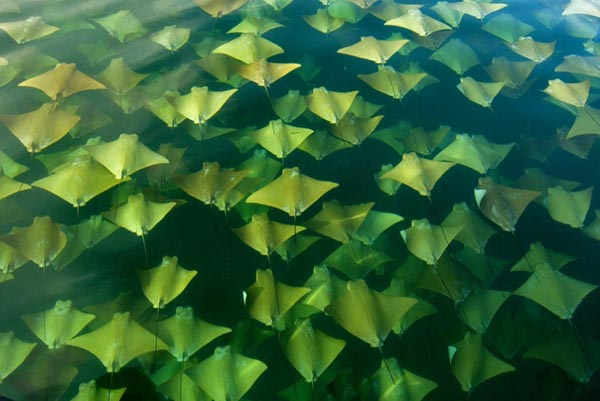
02.10.2009 09:20
Google Latitudes
Hmmm... Google Latitudes is a bit
underwhelming at first, but once I got it figured out, I think it
is pretty cool. I couldn't figure out how to update my position (I
don't have a fancy phone nor want to pay for text messaging or
whatever it uses). Then I stumbled on Google Gears and that got my first
update in. That worked once and got the city. When I went to the
igoogle and saw this. Not super helpful for setup.
I tried clicking on the widget and got nowhere. Once I realized that I can click on the app tab on the left side, I got this more useful interface. Having manual entry is important for folks who go to sea!
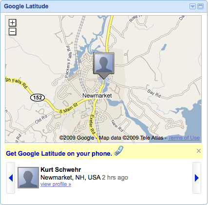
I tried clicking on the widget and got nowhere. Once I realized that I can click on the app tab on the left side, I got this more useful interface. Having manual entry is important for folks who go to sea!
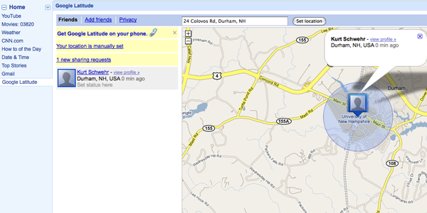
02.09.2009 13:31
NOAA Chart Viewer - new Beta
NOAA has a public preview beta of
their new chart viewer: Paper
and Raster Nautical Chart Catalog (beta). Warning... it does
not support Internet Explorer. Use firefox or similar.
Zoom in and bounding boxes start to appear. Click in a box to start seeing chart listings.
Click on the chart number to pop up the raster chart.
The ENC viewer isn't quite working for me.
Zoom in and bounding boxes start to appear. Click in a box to start seeing chart listings.
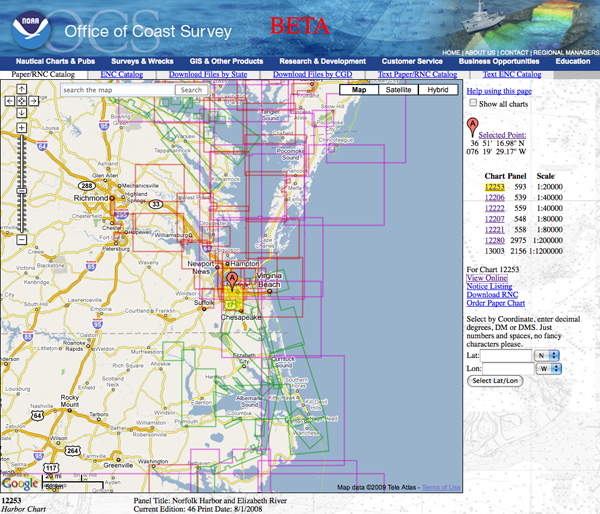
Click on the chart number to pop up the raster chart.
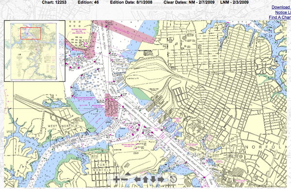
The ENC viewer isn't quite working for me.
02.08.2009 16:42
SIO's web AIS display
Eric Terrill of SIO pointed me to the
SIO real-time AIS web
display put together by Paul Reuter.
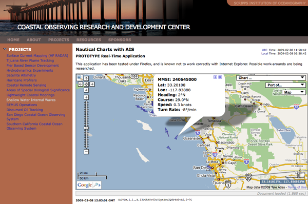
02.05.2009 16:30
Other AGU Google Tech Talks
Here are the other speakers for the
AGU tech talks:
Lisa Ballagh: Tour of Glacier Data Sets via Google Earth and GeoServer
Richard Treves: GeoWeb Usability.
Update 2009-02-19: My Google Tech Talk by Rich.
Phillip G. Dickerson, Jr.: Virtual Globes and Real Time Air Qualty Information: Informing the Public
Declan De Paor: Using Google SketchUp with Google Earth for Scientific Applications
Lisa Ballagh: Tour of Glacier Data Sets via Google Earth and GeoServer
Richard Treves: GeoWeb Usability.
Update 2009-02-19: My Google Tech Talk by Rich.
Phillip G. Dickerson, Jr.: Virtual Globes and Real Time Air Qualty Information: Informing the Public
Declan De Paor: Using Google SketchUp with Google Earth for Scientific Applications
02.05.2009 15:49
VOS vessel tracking visualized by Ben Smith
Ben has now made his VOS vessel
tracking KML public: VOS.
VOS KML Links and KML let you see into the guts of how Ben did network links to avoid loading data until it is need. This helps keep Google Earth from collapsing because of too much data.
VOS KML Links and KML let you see into the guts of how Ben did network links to avoid loading data until it is need. This helps keep Google Earth from collapsing because of too much data.
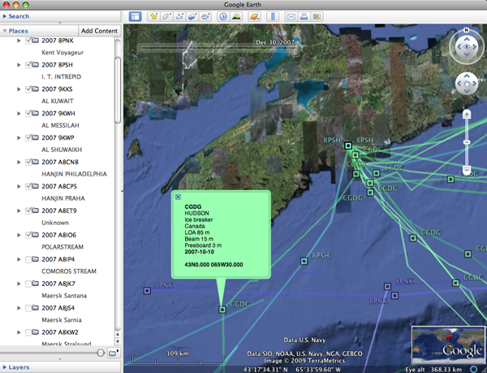
02.05.2009 14:45
Google Maps tile background update in ERMA
ERMA defaults to OpenStreetMaps
(OSM), but can switch to the Google Maps background. Therefor, with
no work on our part, ERMA got an upgraded look. Check it out.
First, the Boston/SBNMS area with AIS vessel tracks:
The portsmouth area. The strongly colored bathymetry in the near shore and reer is an ERMA bathy overlay.
First, the Boston/SBNMS area with AIS vessel tracks:
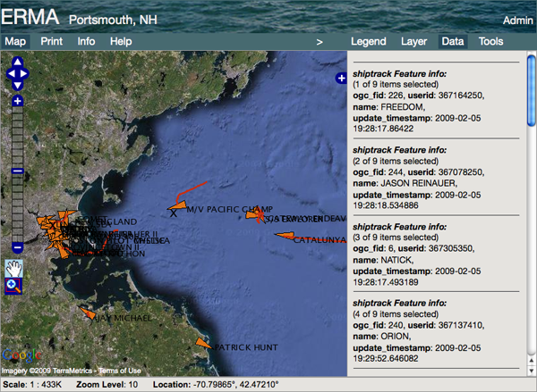
The portsmouth area. The strongly colored bathymetry in the near shore and reer is an ERMA bathy overlay.
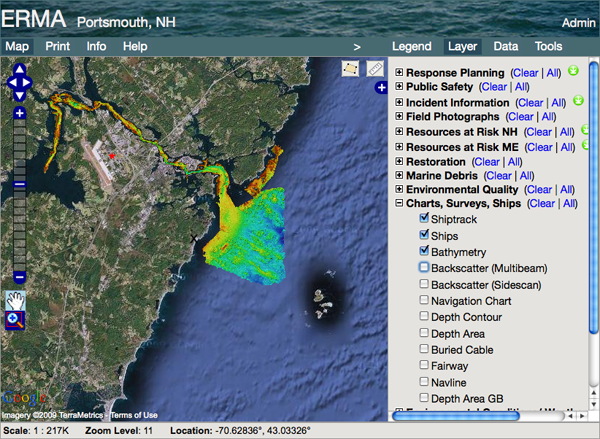
02.04.2009 16:06
My Google Tech Talk from December 2008
Make sure to check out the other AGU
2008 Google Tech Talks. They should come up on the right side of
the youtube page.
I was already over on time, so I didn't give detailed credits on the many projects presented. This is at least more of the people that I worked with on this stuff...
Some images from the talk:
I was already over on time, so I didn't give detailed credits on the many projects presented. This is at least more of the people that I worked with on this stuff...
- Santa Barbara Basin - MBARI, Neal Driscoll, Lisa Tauxe and the crew of BPSIO04 on the R/V Sproul
- Pier in Norfolk, VA - Andy A. for reviewing the chart vidualization
- Delaware AIS - EarthNC
- Sensors in the field - Myche for many hours of discussion and SensorWareSystems for the images
- ERMA - Rob Braswell, Michele Cooke, Amy Merten, Nancy Kinner, and the CRRC
- Vessel mounted LIDAR - Rick Brennen et al.
- Highland Light model - Christiana Arsenault
- GeoCoastPilot - Matt Plumlee, Roland Arsenault, Briana Sullivan, Colin Ware. SBNMS and CCOM for ship time
- Vessel viz - Mike Thompson
- RAP right whale project - Cornell University, SBNMS, Excellerate, Suez, and ICAN Marine
- Jet Ski data - Tom Lippmann for permission to use the survey
- Spatial Lit Searches - Rochele Wiggley, Niel Tinmouth, Dave Monahan, and more
- nowCoast - Jason and John of nowCOAST and Colin Ware for his FlowVis2D system
Some images from the talk:
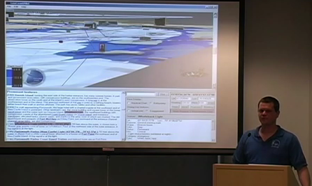
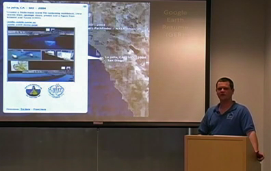
02.04.2009 14:25
extracting data from application plists
I wanted to pull the RSS feeds from
an older NetNewsWireLite application and migrate it to NetNewsWire
3.0 with NewsGater. However, I'm not quite up to remote desktoping
in to the other server to run NetNewsWire Lite and export an OPML.
Also, I'd like to only import a subset of old feeds. This gave me a
chance to play with Mac OSX plists from python.
The first thing to know is that the current plist format doesn't work directly with the python plistlib. You have to first convert it to a ML format and then it is readable with plistlib.
First grab a copy of the subscriptions plist file:
The first thing to know is that the current plist format doesn't work directly with the python plistlib. You have to first convert it to a ML format and then it is readable with plistlib.
First grab a copy of the subscriptions plist file:
% cp ~/schwehr/Library/Application\ Support/NetNewsWire/Subscriptions.plistHere is the code to convert the plist and then grab the RSS urls:
#!/usr/bin/env python
import plistlib, os
os.system('plutil -convert xml1 -o Subscriptions.xml Subscriptions.plist')
pl = plistlib.readPlist('Subscriptions.xml')
print '''<html><body><ul>'''
for item in pl:
if 'rss' in item.keys():
url = item['rss']
print '<li><a href="%s">%s</a></li>' % (url,url)
print '''</ul></body></html>'''
Run it like this:
% dumprss_from_plist.py > feeds.htmlThen open it and start using the urls to add the feeds to your news reader.
% open feeds.html
02.03.2009 14:35
Sylvia Earle and John Hanke introduce Google Oceans
Check out the video on the UK
Guardian:
Google Earth, Google Ocean: mysteries of the seafloor are mapped for the first time
Google Earth, Google Ocean: mysteries of the seafloor are mapped for the first time
02.03.2009 08:05
Digipilot - Official digital nautical pub
A year ago, I
posted about Digipilot. I
wasn't able to post any screenshots because I was connected to the
net via my Verizon EVDO card. It's time to correct that, so here is
what it looks like:
First you have to pick your region.
Each number is a location with sailing directions.
Clicking on a number brings up the sailing directions at that location.
First you have to pick your region.
Each number is a location with sailing directions.
Clicking on a number brings up the sailing directions at that location.
02.02.2009 14:57
Google Mars - Phoenix
Here is my little contribution to
Google Mars. This is the best mosaic avaible for release as of the
time the Google Earth time had to freeze the 5.0 release. The
complete mosaic with the deck is not yet finished.
Get the original here: PIA11734: Full-Circle Color Panorama of Phoenix Landing Site on Northern Mars [JPL Planetary Photojournal]
The NASA press release:
Get the original here: PIA11734: Full-Circle Color Panorama of Phoenix Landing Site on Northern Mars [JPL Planetary Photojournal]
The NASA press release:
Feb. 02, 2009 Dwayne Brown Headquarters, Washington 202-358-1726 dwayne.c.brown@nasa.gov Michael Mewhinney Ames Research Center, Moffett Field, Calif. 650-604-3937 michael.s.mewhinney@nasa.gov RELEASE: 09-024 NASA AND GOOGLE LAUNCH VIRTUAL EXPLORATION OF MARS MOFFETT FIELD, Calif. -- NASA and Google announced Monday the release of a new Mars mode in Google Earth that brings to everyone's desktop a high-resolution, three-dimensional view of the Red Planet. Besides providing a rich, immersive 3D view of Mars that will aid public understanding of Mars science, the new mode, Google Mars 3D, also gives researchers a platform for sharing data similar to what Google Earth provides for Earth scientists. The mode enables users to fly virtually through enormous canyons and scale huge mountains on Mars that are much larger than any found on Earth. Users also can explore the Red Planet through the eyes of the Mars rovers and other Mars missions, providing a unique perspective of the entire planet. Users can see some of the latest satellite imagery from NASA's Mars Reconnaissance Orbiter and other probes orbiting the Red Planet. Viewers can learn about new discoveries and explore indexes of available Mars imagery. The new Mars mode also allows users to add their own 3D content to the Mars map to share with the world. Today's announcement is the latest benefit from a Space Act Agreement NASA's Ames Research Center in Moffett Field, Calif., signed with Google in November 2006. Under its terms, NASA and Google agreed to collaborate to make NASA's data sets available to the world. NASA Ames, along with its partners at Google, Carnegie Mellon University, SETI, and other institutions, helped produce the data to make this possible. Google's innovative search technologies connect millions of people around the world with information every day. Google is headquartered close to Ames in Silicon Valley with offices throughout the Americas, Europe and Asia. For more information about NASA and agency programs, visit: http://www.nasa.gov For more information about Google, visit: http://www.google.com -end-
02.02.2009 13:02
Google Earth 5 - Now with seafloor with bathymetry
Google Earth 5 came out today. It has
sea floor depths that are actually below 0! This is a feature that
many have been waiting a long time for. The bathy still has the
DTS/SIO tag on it. I think this is the same bathy data we saw just
get released recently for Google Earth 4.x.
Here is the new layer for the oceans. Also, there is a new animated water surce feature that I really don't like. At least you can turn it off. Too bad they don't have the right whale tracking in their "Animal Tracking" layer.
The intro video:
Here is the new layer for the oceans. Also, there is a new animated water surce feature that I really don't like. At least you can turn it off. Too bad they don't have the right whale tracking in their "Animal Tracking" layer.
The intro video:
02.01.2009 19:29
Transfering X11 Applications menu for the mac
This is a quick tutorial on how to
copy the X11 Applications menu from one mac to another. I'm using
Xquartz 2.3.1, your milage may vary with other X11's on the
mac.
First, make a backup of your original plist on the target machine, just in case:
I'm trying to streamline the answer:
defaults write with complex input [macosxhints forum]
Update 03-Feb-2009: WARNING: Everything below is likely to erase your apps_menu items. It will likely make the plist key a string rather than an array. I've sent in a feedback request to apple for stdin reading of text to allow cat to just work for defaults write. Until then, biovizier on macosxhints forums, this appears to work for me. I've not run commands like that in bash in my memory.
So Far, I have this. However, I makes the apps_menu.txt very hard to read.
Suggestions?
Alex (ACD) suggested xargs. That got me to this which works:
First, make a backup of your original plist on the target machine, just in case:
% cp ~/Library/Preferences/org.x.X11.plist ~/Desktop/Now, go to the machine with the Applications menu setup the way you want it to be and run this command:
% defaults read org.x.x11 apps_menu > apps_menu.txtThe apps_menu.txt file should look something like this:
(
(
Terminal,
"xterm -sl 1000 -sb -s -j -bg black -fg white",
n
),
(
xlogo,
xlogo,
""
)
)
The contents should make sense with what you setup. Copy
apps_menu.txt to the target machine and run this:
% defaults write org.x.x11 apps_menu '(
(
Terminal,
"xterm -sl 1000 -sb -s -j -bg black -fg white",
n
),
(
xlogo,
xlogo,
""
)
)'
Take a look at the results. This should come up in the plist
editor.
% open ~/Library/Preferences/org.x.X11.plist
I'm trying to streamline the answer:
defaults write with complex input [macosxhints forum]
Update 03-Feb-2009: WARNING: Everything below is likely to erase your apps_menu items. It will likely make the plist key a string rather than an array. I've sent in a feedback request to apple for stdin reading of text to allow cat to just work for defaults write. Until then, biovizier on macosxhints forums, this appears to work for me. I've not run commands like that in bash in my memory.
% defaults write org.x.X11 apps_menu "$(cat apps_menu.txt)"Older ideas...
So Far, I have this. However, I makes the apps_menu.txt very hard to read.
% perl -pi -e "s|^\(|\'(|g" apps_menu.txt % perl -pi -e "s|^\)$|\)'|g" apps_menu.txt % perl -pi -e 's|\n||g' apps_menu.txt % perl -pi -e 's| ||g' apps_menu.txt % defaults write org.x.x11 apps_menu `cat apps_menu.txt`Where apps_menu.txt looks like this after all the perl statements:
'((Terminal,"xterm -sl 1000 -sb -s -j -bg black -fg white",n),(xlogo,xlogo,""))'If there were a lot of items and you wanted to customize the settings a bit, it would be difficult in this form.
Suggestions?
Alex (ACD) suggested xargs. That got me to this which works:
% cat apps_menu.txt | perl -pe "s|^\(|\'(|g" | perl -pe "s|^\)$|\)'|g" | xargs -0 defaults write org.x.x11 apps_menuThe xargs -O flag tells xargs that newlines and spaces are not separators between args... only the \0 (end of string) character. This causes xargs to treat the whole apps_menu.txt as one argument.
02.01.2009 18:30
WRT54G and AIM
I've got an old WRT54G with an
ancient 2.02.7 firmware. I know that I really need to update it or
better yet, switch to dd-wrt.
Till then, here a tip for those using the standard version with the
web interface. If you don't set these two exactly as I have hear,
AIM (Aol Instant Messager) will not work. Yahoo and Google IM will
work, but not AIM.